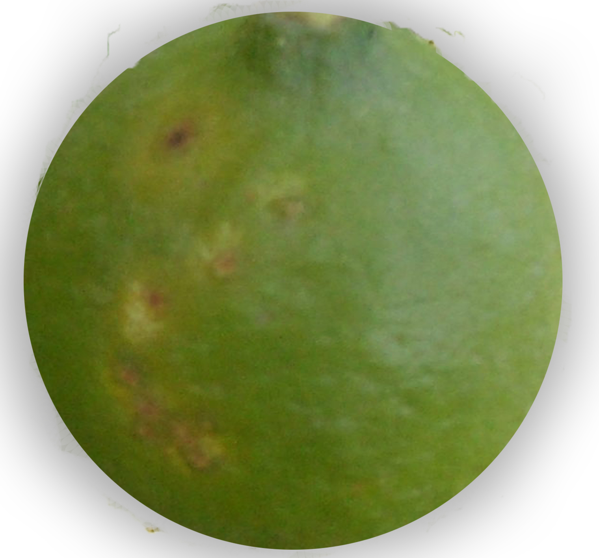
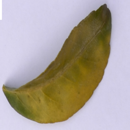

柑橘黄龙病
病原：柑橘黄龙病由 亚洲柑橘黄龙病菌（Candidatus Liberibacter asiaticus） 细菌引起，主要通过带菌的蚜虫传播。
症状：叶片发黄、畸形，植物生长停滞，果实小且口感差。严重时，树木会死亡。
解决办法
预防措施：
- 防治蚜虫：使用抗蚜虫农药，降低蚜虫传播黄龙病的风险。
- 隔离管理：发现病树应及时隔离并销毁，防止病菌蔓延。
- 选择抗病品种：栽培抗黄龙病的柑橘品种，提高抗病能力。
- 定期检查：加强果园的监测，及时发现症状并采取相应措施。
药物防治：
- 噻虫嗪（Thiamethoxam）：
使用浓度： 25%水分散粒剂5000~6000倍液。使用时机：春季和秋季蚜虫活跃期。
使用方法： 每隔7~10天喷施一次，连续喷施2~3次。
- 吡虫啉（Imidacloprid）：
使用浓度： 10%可湿性粉剂1500倍液。使用时机：蚜虫繁殖高峰期。
使用方法： 间隔15天喷施一次，连续2次。
柑橘黄龙病示例

柑橘黄龙病果实

柑橘黄龙病叶片
注：图片仅为示例，实际黄龙病症状可能因病原体种类、环境条件等因素而有所不同。